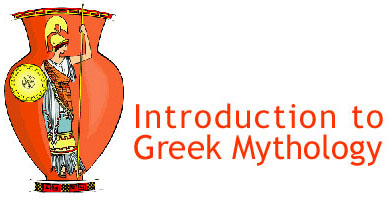

|  | |
|
Background
The stories of the Greek myths are all that remain of an ancient religion. The gods and goddesses of stories represent the metaphors that the ancient Greeks used to make sense of the world around them and of life in general. Those metaphors provided inspiration for a wealth of literature. Since the ancient Greeks began telling these stories in a pre-literate era (before they had writing), at first the stories were passed down from generation to generation in an oral tradition. The story of the Odyssey, for example, is supposed to have been composed by a blind poet named Homer. Today scholars suspect there was more than one "Homer" who helped shape the final epic, as different storytellers added or subtracted details or episodes. Once poets and dramatists began writing the stories down, they preserved them for future generations. What they preserved, though, is the story as they told it. So we must look at the stories as both religion and literature at the same time. We must treat them with respect. You will understand the great Greek epic poem The Odyssey much better if you have a working knowledge of the gods and goddesses. We will spend this week researching and presenting what we have learned. At the end of the week, we will have a Greek (pitch-in) feast! Your Task: Research, write, and present a speech about a Greek god or goddess. You will be assigned a character for your speech. Your speech must include the following details:
You must wear a garment similar to what the Greeks wore. A simple, draped sheet will do. You must bring in at least one of your symbols. A picture will do. Assessment: I will use this rubric to evaluate your presentation. Resources: Our library has some good books you can use, including Mythology by Edith Hamilton. You can look in encyclopedias, and you might try some of the following Web sites:
Note to Teachers: Teachers have permission to use this project, handout, and rubric in a classroom setting. Any commercial use without permission is prohibited. Copyright 2011, Carla Beard, Web English Teacher. |
|